Animal Life Cycle. An animal life cycle that includes only sexual reproduction is shown here. Some animals also reproduce asexually. How does the animal life cycle compare with the life cycle of a plant?
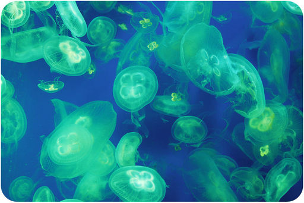
Do you know what these greenish, blob-like shapes are? Would it surprise you to learn that they are animals? They don’t look anything like the animals you are probably familiar with—animals such as dogs and deer, fish and frogs. But the greenish blobs are animals nonetheless. They belong to a phylum called Cnidaria, but you may know them as jellyfish. They are very simple animals and not fish at all. How can an organism as simple as a jellyfish be considered an animal? How are animals defined? What traits must an organism have to be classified in the animal kingdom? In this chapter, you will learn the answers to these questions. You will find out just what it means to be an animal.
There is great variation among species that make up the animal kingdom. Some of this variation is shown in Figure below . Despite the variation, there are a number of traits that are shared by all animals. The fact that all animals have certain traits in common shows that they share a common ancestor. How did such a diverse group of organisms evolve? What traits do all animals share? Read on to find out.
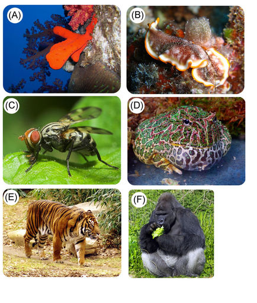
Diversity of Animals. These photos give just an inkling of the diversity of organisms that belong to the animal kingdom. (A) Sponge (B) Flatworm (C) Flying Insect (D) Frog (E) Tiger (F) Gorilla.
Animals are a kingdom of multicellular eukaryotes. They cannot make their own food. Instead, they get nutrients by eating other living things. Therefore, animals are heterotrophs.
Like the cells of all eukaryotes, animal cells have a nucleus and other membrane-bound organelles (see Figure below ). Unlike the cells of plants and fungi, animal cells lack a cell wall. This gives animal cells flexibility. It lets them take on different shapes so they can become specialized to do particular jobs. The human nerve cell shown in Figure below is a good example. Its shape suits it for its function of transmitting nerve impulses over long distances. A nerve cell would be unable to take this shape if it were surrounded by a rigid cell wall.
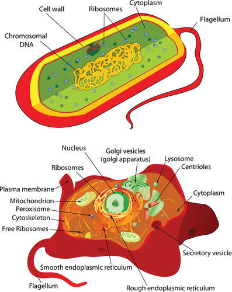
Animal Cell. The shape of an animal cell is not constrained by a rigid cell wall. A bacterial cell is shown above for comparison.
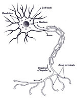
Human Nerve Cell. A human nerve cell is specialized to transmit nerve impulses. How do you think the cell’s shape helps it perform this function?
Animals not only have specialized cells. Most animals also have tissues and organs. In many animals, organs form organ systems, such as a nervous system. Higher levels of organization allow animals to perform many complex functions. What can animals do that most other living things cannot? Here are some examples. All of them are illustrated in Figure below .
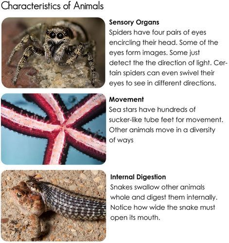
Characteristics of Animals. Most animals share these characteristics: sensory organs, movement, and internal digestion.
Many animals have a relatively simple life cycle. A general animal life cycle is shown in Figure below . Most animals spend the majority of their life as diploid organisms. Just about all animals reproduce sexually. Diploid adults undergo meiosis to produce sperm or eggs. Fertilization occurs when a sperm and an egg fuse. The zygote that forms develops into an embryo. The embryo eventually develops into an adult.
Animal Life Cycle. An animal life cycle that includes only sexual reproduction is shown here. Some animals also reproduce asexually. How does the animal life cycle compare with the life cycle of a plant?
All animals share basic traits. But animals also show a lot of diversity. They range from simple sponges to complex humans.
Members of the animal kingdom are divided into more than 30 phyla. Table below lists the 9 phyla with the greatest number of species. Each of the animal phyla listed in the table have at least 10,000 species.
The first eight phyla listed in Table above include only invertebrate animals. Invertebrates are animals that lack a vertebral column , or backbone. The last phylum in the table, the Chordata, also includes many invertebrate species. Tunicates and lancelets are both invertebrates. Altogether, invertebrates make up at least 95 percent of all animal species. The remaining animals are vertebrates. Vertebrates are animals that have a backbone. All vertebrates belong to the phylum Chordata. They include fish, amphibians, reptiles, birds, and mammals.
The oldest animal fossils are about 630 million years old. By 500 million years ago, most modern phyla of animals had evolved. Figure below shows when some of the major events in animal evolution took place.
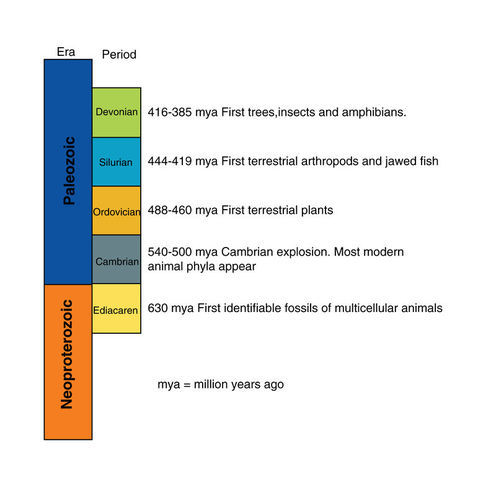
Partial Geologic Time Scale. This portion of the geologic time scale shows major events in animal evolution.
Who were the ancestors of the earliest animals? They may have been marine protists that lived in colonies. Scientists think that cells of some protist colonies became specialized for different jobs. After a while, the specialized cells came to need each other for survival. Thus, the first multicellular animal evolved. Look at the cells in Figure below . One type of sponge cell, the choanocyte, looks a lot like the protist cell. How does this support the hypothesis that animals evolved from protists?
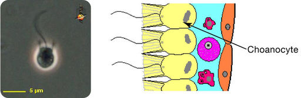
Choanoflagellate Protist and Choanocyte Cells in Sponges. Sponge choanocytes look a lot like choanoflagellate protists.
Many important animal adaptations evolved in invertebrates. Without these adaptations, vertebrates would not have been able to evolve. They include:
You can read about all of these adaptations in the next lesson.
When you think of the first animals to colonize the land, you may think of amphibians. It’s true that ancestors of amphibians were the first vertebrates to move to land. However, the very first animals to go ashore were invertebrates, most likely arthropods.
The move to land required new adaptations. For example, animals needed a way to keep their body from drying out. They also needed a way to support their body on dry land without the buoyancy of water. One way early arthropods solved these problems was by evolving an exoskeleton. This is a non-bony skeleton that forms on the outside of the body. It supports the body and helps retain water. The video Walking with Monsters is a depiction of the evolution of life from water onto land: http://www.youtube.com/watch?v=gytrNU3iwvM (4:43).
Another major step in animal evolution was the evolution of a notochord. A notochord is a rigid rod that runs the length of the body. It supports the body and gives it shape (see Figure below ). It also provides a place for muscles to anchor, and counterbalances them when they contract. Animals with a notochord are called chordates. They also have a hollow nerve cord that runs along the top of the body. Gill slits and a tail are two other chordate features. Many modern chordates have some of these structures only as embryos.
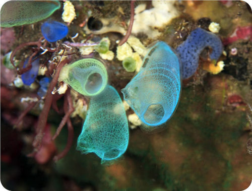
Primitive Chordate: Tunicate. This tunicate is a primitive, deep-sea chordate. It is using its notochord to support its head, while it waits to snatch up prey in its big mouth.
Vertebrates evolved from primitive chordates. This occurred about 550 million years ago. The earliest vertebrates may have been jawless fish, like the hagfish in Figure below . Vertebrates evolved a backbone to replace the notochord after the embryo stage. They also evolved a cranium, or bony skull, to enclose and protect the brain.
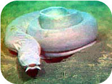
Primitive Vertebrate: Hagfish. Hagfish are very simple vertebrates.
As early vertebrates evolved, they became more complex. Around 365 million years ago, they finally made the transition from water to land. The first vertebrates to live on land were amphibians. They evolved from lobe-finned fish. You can compare a lobe-finned fish and an amphibian in Figure below .
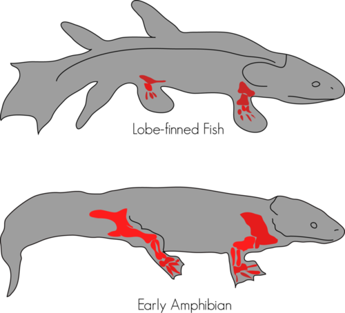
From Lobe-Finned Fish to Early Amphibian. Lobe-finned fish evolved into the earliest amphibians. A lobe-finned fish could breathe air for brief periods of time. It could also use its fins to walk on land for short distances. What similarities do you see between the lobe-finned fish and the amphibian?
Amphibians were the first animals to have true lungs and limbs for life on land. However, they still had to return to water to reproduce. That’s because their eggs lacked a waterproof covering and would dry out on land. The first fully terrestrial vertebrates were amniotes. Amniotes are animals that produce eggs with internal membranes. The membranes let gases but not water pass through. Therefore, in an amniotic egg, an embryo can breathe without drying out. Amniotic eggs were the first eggs that could be laid on land. The earliest amniotes evolved about 350 million years ago. They may have looked like the animal in Figure below . Within a few million years, two important amniote groups evolved: synapsids and sauropsids. Synapsids evolved into mammals. The sauropsids gave rise to reptiles, dinosaurs, and birds.
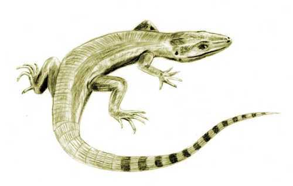
Early Amniote. The earliest amniotes probably looked something like this. They were reptile-like, but not actually reptiles. Reptiles evolved somewhat later.
1. Identify traits that characterize all animals.
2. State one way that animal cells differ from the cells of plants and fungi. What is the significance of this difference?
3. Describe a general animal life cycle.
4. State how the phylum Chordata differs from other animal phyla.
5. List three traits that evolved in invertebrate animals.
6. Assume that a new species of animal has been discovered. It is an egg-laying animal that lives and reproduces on land. Explain what you know about its eggs without ever seeing them.
7. Compare and contrast invertebrates and vertebrates.
8. Relate similarities between choanoflagellates and choanocytes to animal origins.
Vertebrates are the animals with which we are most familiar. But there are far more invertebrates than vertebrates on the planet. The next lesson provides an overview of invertebrate animals.
The majority of animals today are invertebrates. They have a wide range of physical traits and ways of life. Modern invertebrates include animals as different as the sponge and tarantula shown in Figure below . Why are both of these animals classified as invertebrates? What traits do they have common?
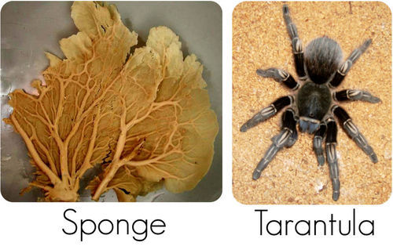
Examples of Invertebrates. Both a sponge (left) and tarantula (right) are invertebrates. Can you identify any traits they share?
One trait the sponge and tarantula share is lack of a backbone. In fact, they don’t have any bones at all. These are defining traits of all invertebrates. Some invertebrates have a skeleton, but it isn’t made of bone. Many other traits of invertebrates show considerable diversity.
Invertebrates have one of two types of digestive system. They are called incomplete and complete digestive systems. Both are shown in Figure below . An incomplete digestive system consists of a digestive cavity with one opening. The single opening serves as both mouth and anus. A complete digestive system consists of a digestive tract with two openings. One opening is the mouth. The other is the anus.

Two Types of Digestive Systems in Invertebrates. On the left is an incomplete digestive system, found in a jellyfish; on the right is the complete digestive system of a roundworm. Invertebrates may have either of these two types of digestive system. Find the parts of each digestive system in each drawing. How do the two systems differ?
All invertebrates can move on their own during at least some stage of their life cycle. However, they may differ in how they move. Several ways are described below.
Most invertebrates have a nervous system. The nervous system allows them to sense and respond to their environment. The simplest invertebrate nervous system is just a network of nerves that can sense touch (see Figure below ). Most invertebrates have a more complex nervous system. It may include a brain and several different sense organs.
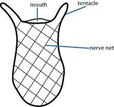
Nerve Net (Coral). The body of a coral is lined with a net of nerves that can detect touch. How might this ability be adaptive?
Most invertebrates reproduce sexually. Diploid adults produce haploid gametes (sperm and eggs). In some species, the same individuals produce both sperm and eggs. In other species, sperm and eggs are produced by separate male and female individuals. Fertilization occurs when a sperm and an egg fuse to form a diploid zygote. The zygote develops into an embryo and eventually into a new adult organism. On the way, it may pass through one or more larval stages. A larva (plural, larvae) is a juvenile, or immature, stage of an animal. It is generally quite different in form and function from the adult form of the species. For example, the larva may be able to swim freely, whereas the adult must remain permanently attached to a solid surface.
Some invertebrates can also reproduce asexually. This may occur by fission or budding. Fission takes place when an animal simply divides into two parts. Each part then regrows the missing part. The result is two whole organisms. Budding may take place when a parent forms a small bump, or bud. The bud remains attached to the parent while it develops into a new individual.
Invertebrates evolved several important traits before vertebrates even appeared. These traits are now found in just about all animals.
The first animal trait to evolve was multicellularity. This was highly adaptive. Multiple cells could do different jobs. They could evolve special adaptations that allowed them to do their job really well. However, the first invertebrates still lacked tissues. Sponges represent the first organism at this stage of invertebrate evolution.
Living cnidarians, such as jellyfish, represent the next stage of invertebrate evolution. This was the evolution of tissues. It was the first step in the evolution of organs and organ systems. At first, invertebrates developed tissues from just two embryonic cell layers. There was an outer cell layer called ectoderm and an inner cell layer called endoderm. The two cell layers allowed different types of tissues to form.
Another trait that evolved early on was symmetry. To understand symmetry, you need to see an animal that lacks symmetry. A sponge, like the one in Figure below , lacks symmetry. This means it cannot be divided into two identical halves. A symmetrical organism, in contrast, can be divided into two identical halves. Both the coral polyp and the beetle in Figure below have symmetry.
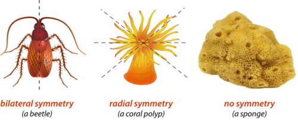
Symmetry in Invertebrates. Sponges lack symmetry. Radial symmetry evolved first. This was followed by bilateral symmetry. How do the two types of symmetry differ?
The coral polyp in Figure above has radial symmetry. This was the first type of symmetry to evolve. The coral has a distinct top and bottom but not distinct ends. It can be divided into identical halves like a pie, but not into right and left halves. Animals with radial symmetry have no sense of directions such as forward and backward or left and right. This makes controlled movement in these directions impossible.
Flatworms represent the next stage of invertebrate evolution. They evolved cephalization. This is the concentration of nerve tissue at one end of the body, forming a head region. This is highly adaptive. It allows central control of the entire organism. Cephalization was first step in the evolution of a brain.
An outcome of cephalization was bilateral symmetry. This is demonstrated by the beetle in Figure above . With concentrated nerve tissue at the head but not at the tail end, the two ends of the body are distinct from each other. The animal can be divided down the middle to form identical right and left halves. It allows the animal to tell front from back and left from right. This is needed for controlled movements in these directions.
Ancestors of flatworms also evolved mesoderm. This is a third layer of cells between the ectoderm and the endoderm (see Figure below ). Evolution of this new cell layer allowed animals to develop new types of tissues, such as muscle.
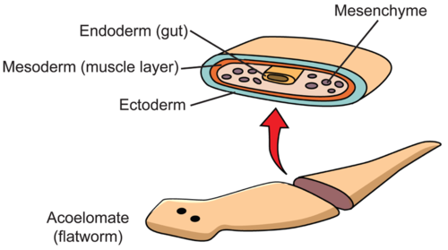
Three Cell Layers in a Flatworm. A flatworm has three cell layers.
Early invertebrates had an incomplete digestive system. There was just one opening for the mouth and anus. Ancestors of modern roundworms were the first animals to evolve a complete digestive system. With a separate mouth and anus, food could move through the body in just one direction. This made digestion more efficient. An animal could keep eating while digesting food and getting rid of waste. Different parts of the digestive tract could also become specialized for different digestive functions. This led to the evolution of digestive organs.
Ancestors of roundworms also evolved a pseudocoelom. This is a partial body cavity that is filled with fluid. It allows room for internal organs to develop. The fluid also cushions the internal organs. The pressure of the fluid within the cavity provides stiffness. It gives the body internal support, forming a hydrostatic skeleton. It explains why roundworms are round and flatworms are flat. Later, a true coelom evolved. This is a fluid-filled body cavity, completely enclosed by mesoderm. It lies between the digestive cavity and body wall (see Figure below ). Invertebrates with a true coelom include mollusks and annelids.
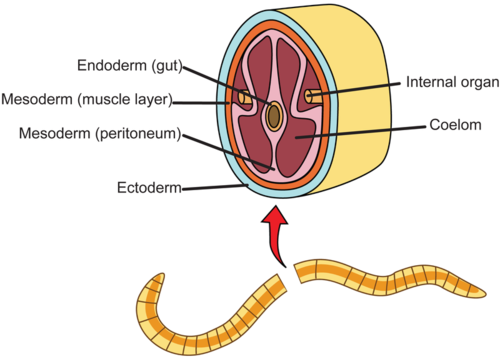
Cross Section of an Invertebrate with a Coelom. The coelom forms within the mesoderm.
Segmentation evolved next. This is a division of the body into multiple segments. Both the earthworm and ant pictured in Figure below have segmented bodies. This trait increases flexibility. It permits a wider range of motion. All annelids and arthropods are segmented. Arthropods also evolved jointed appendages. For example, they evolved jointed legs for walking and “feelers” (antennae) for sensing.
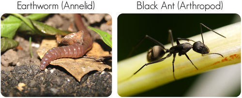
Segmented Invertebrates. Earthworm (Annelid) and Black Ant (Arthropod). An earthworm consists of many small segments. An ant has three larger segments. Notice the ants jointed legs and “feelers.”
Some invertebrates evolved a notochord. This is the stiff support rod in a chordate. The first chordates were probably similar to modern invertebrate chordates. The sea squirt in Figure below is an example. Later, some invertebrate chordates evolved into vertebrates.
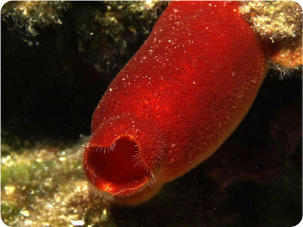
Notochord. A sea squirt is an invertebrate with a notochord.
Eight major phyla contain the majority of invertebrate species.
Table below gives an overview of the eight invertebrate phyla with the greatest number of species. The next chapter describes each phylum in greater detail.
| Phylum (includes) | Notable Characteristics | Example |
|---|---|---|
| Porifera (sponges) | multicellularity, specialized cells but no tissues, asymmetry, incomplete digestive system | sponges |
| Cnidaria (jellyfish, corals) | radial symmetry, true tissues, incomplete digestive system | jellyfish |
| Platyhelminthes (flatworms, tapeworms, flukes) | cephalization, bilateral symmetry, mesoderm, complete digestive system | flatworm |
| Nematoda (roundworms) | pseudocoelom, complete digestive system | roundworm |
| Mollusca (snails, clams, squids) | true coelom, organ systems, some with primitive brain | snail |
| Annelida (earthworms, leeches, marine worms) | segmented body, primitive brain | earthworm |
| Arthropoda (insects, spiders, crustaceans, centipedes) | segmented body, jointed appendages, exoskeleton, brain | insect (dragonfly) |
| Echinodermata (sea stars, sea urchins, sand dollars, sea cucumbers) | complete digestive system, coelom, spiny internal skeleton | sea urchin |
Most invertebrates (and higher animals) can also be placed in one of two groups based on how they develop as embryos. The two groups are called protostomes and deuterostomes. As shown in Figure below , organisms in the two groups have different ways of forming the coelom and mouth, among other differences.
Mollusks, annelids, and arthropods are protostomes. Echinoderms and chordates are deuterostomes. This distinction is important. Why does it matter? It shows that echinoderms are more closely related to chordates than are the other invertebrate phyla. This is not apparent based on other, more obvious traits.
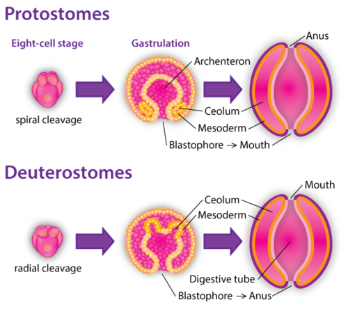
Protostomes vs. Deuterostomes. In protostomes such as mollusks, the coelom forms within the mesoderm. In deuterostomes such as echinoderms, the coelom forms from a pouch of endoderm. How does the formation of the mouth differ in these two groups of animals?
1. Describe the range of variation in the nervous systems of invertebrates.
2. Distinguish among asymmetry, radial symmetry, and bilateral symmetry.
3. Define cephalization. What is its relationship to bilateral symmetry?
4. What is mesoderm? Name an invertebrate with mesoderm.
5. Define coelom. How is the coelom related to the hydrostatic skeleton?
6. What is segmentation? Why is it adaptive?
7. Describe evidence showing that echinoderms are more closely related to chordates than are other invertebrate phyla.
8. Create a diagram to show the life cycle of an invertebrate with a larval stage. Include simple sketches of the adult and larval stages of the animal.
9. Assume you have discovered a new invertebrate. It has a segmented body, a brain, and jointed appendages. In which phylum would you place it? Why?
10. Compare and contrast incomplete and complete digestive systems. Why is a complete digestive system more efficient?
11. Explain how invertebrate movement is related to body symmetry.
This chapter presents an overview of invertebrate phyla. The next chapter describes invertebrate phyla in greater detail.
Opening image copyright RAGMA IMAGES, 2010. http://www.shutterstock.com . Used under license from Shutterstock.com.
For Table above , top to bottom,
{kind=link}
:%20http://commons.wikimedia.org/wiki/File:Prokaryote_cell_diagram.svg;%20(Bottom):%20http://en.wikipedia.org/wiki/File:Animal_cell_structure.svg){kind=link}
{kind=link}
%20http://starcentral.mbl.edu/microscope/portal.php?pagetitle=assetfactsheet&imageid=548;%20(Right)%20http://commons.wikimedia.org/wiki/File:Ascon_anatomia.jpg){kind=link}
{kind=link}
{kind=link}
:%20http://commons.wikimedia.org/wiki/File:Phakellia_600.jpg;%20(Spider)%20http://commons.wikimedia.org/wiki/File:Sand_tarantula.jpg){kind=link}